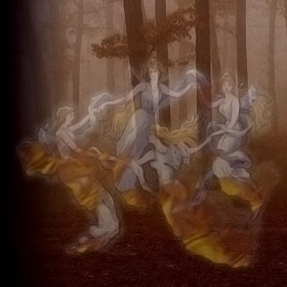

Юрий Шевченко · ГДЕ? · De Profundis
Как будто Лорд Байрон

Руслан Гончаров — текст, бэк-вокал, коньяк, мудрое руководство.
Юрий Шевченко — музыка, аранжировка, вокал, запись, сведение, фотоколлаж.
Вокал записан в студии Kaidaki-na-Shvabre Sound 14 сентября 2007 г.
Фонограмма и мастер изготовлены в студии ViP в сентябре 2007 г.
Дата релиза — 3 октября 2007 г.